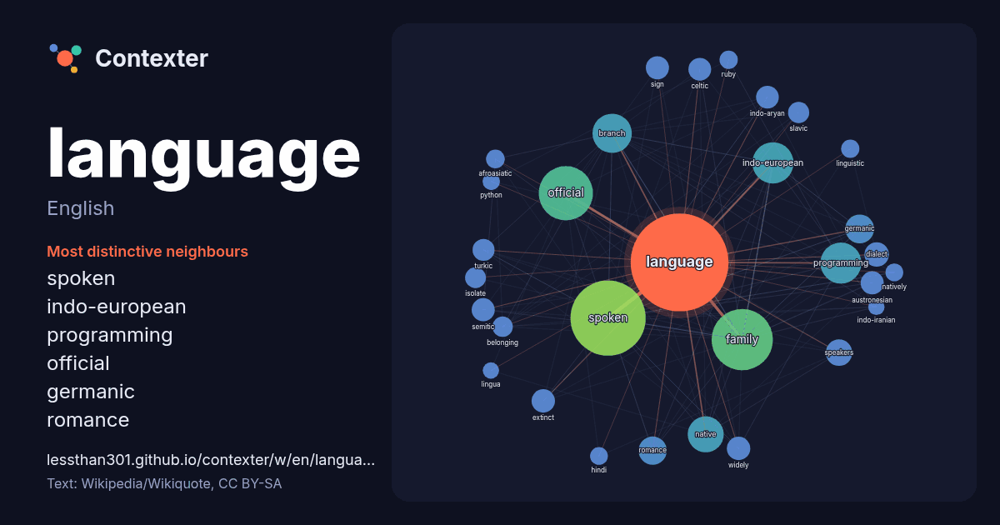

English · popular word
language
The words found around it in 2722 instances from English Wikipedia, Wikiquote and Hacker News.

Most distinctive neighbours
- spoken 257×
- indo-european 100×
- programming 66×
- official 61×
- germanic 47×
- romance 40×
- branch 39×
- austronesian 32×
- semitic 32×
- indo-aryan 32×
- native 31×
- turkic 29×
- dialect 28×
- extinct 28×
- celtic 27×
- speakers 27×
- isolate 26×
- slavic 25×
- family 23×
- afroasiatic 22×
× = how many times more often than in general English Wikipedia text.
Most frequent neighbours
- spoken 340
- family 226
- official 177
- indo-european 102
- programming 101
- branch 93
- native 78
- english 65
- national 60
- germanic 50
- romance 48
- group 47
- india 47
- world 43
- speakers 42
- dialect 36
- form 35
- extinct 33
- widely 33
- austronesian 32
In context
- Language is a structured system of communication that consists of grammar and vocabulary. It is the primary means by which humans convey meaning, both Wikipedia snippets · Language
- as the breeding ground for the group of writers who became known as the Language poets. "L=A=N=G=U=A=G=E Magazine". Eclipse Archive. Retrieved March 1, Wikipedia snippets · Language (magazine)
- Germanic language of the Indo-European language family that emerged in early medieval England and has since become a global lingua franca. The language is named Wikipedia snippets · English language
- Slavic language belonging to the Balto-Slavic branch of the Indo-European language family. It is one of the four extant East Slavic languages, and is Wikipedia snippets · Russian language
- Spanish (español) or Castilian (castellano) is a Romance language of the Indo-European language family that evolved from the Vulgar Latin spoken on the Wikipedia snippets · Spanish language
- française [lɑ̃ɡ fʁɑ̃sɛːz] ) is a Romance language of the Indo-European family. Like all other Romance languages, French and its closest relatives—the langues Wikipedia snippets · French language
- language in the Indo-European language family, mainly spoken in Western and Central Europe. It is the majority and official (or co-official) language Wikipedia snippets · German language
- A language family is a group of languages related through descent from a common ancestor, called the proto-language of that family. The term family is Wikipedia snippets · Language family
More English words
- art
- autumn
- bell
- bread
- bridge
- cat
- city
- climate
- clock
- death
- desert
- dog
- family
- food
- forest
- garden
- god
- gold
- health
- heart
- history
- honey
- horse
- island
- life
- map
- mirror
- money
- mother
- mountain
- nature
- power
- rain
- road
- salt
- science
- shadow
- silence
- song
- star
- storm
- summer
- tea
- time
- train
- truth
- water
- winter
- work
Precomputed on 2026-10-09 with default settings (±5 words, medium corpus). The interactive map can refresh it with live data.